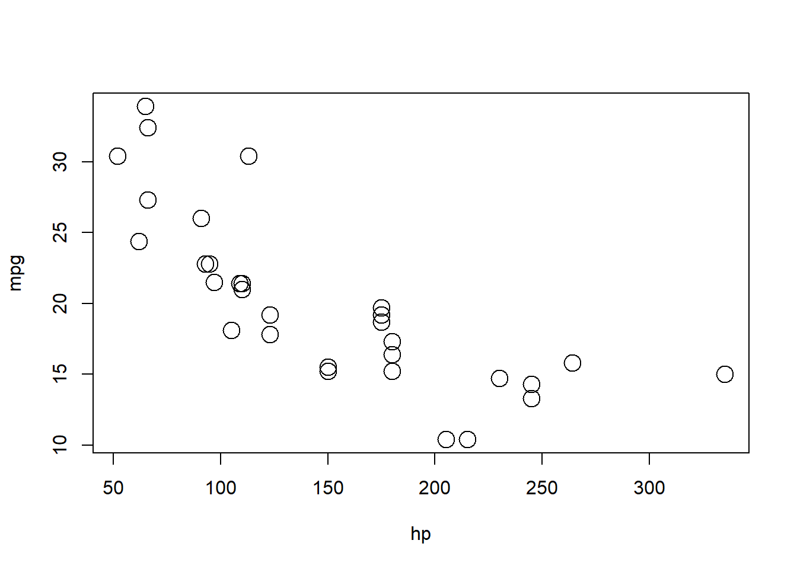
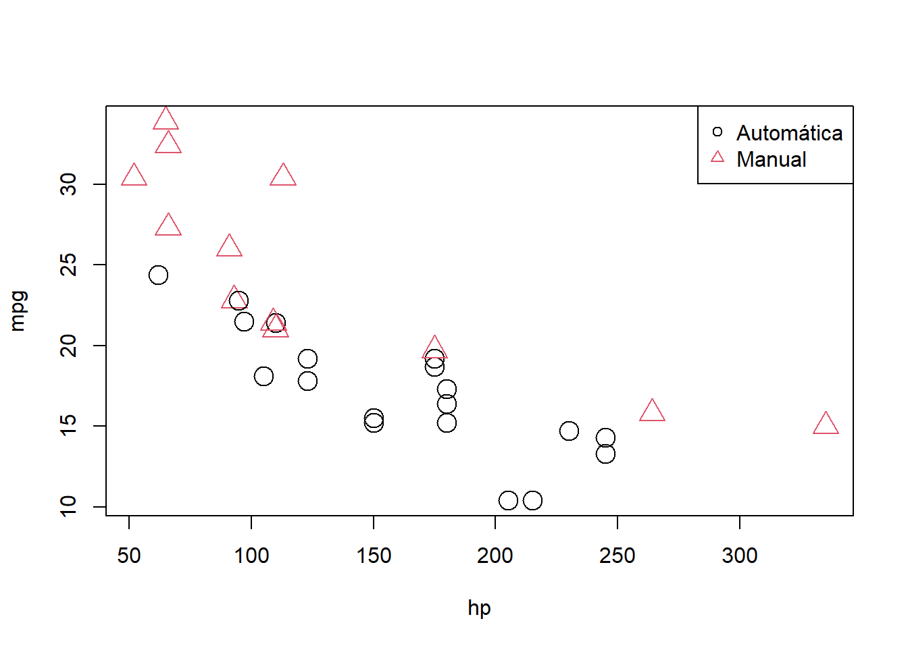
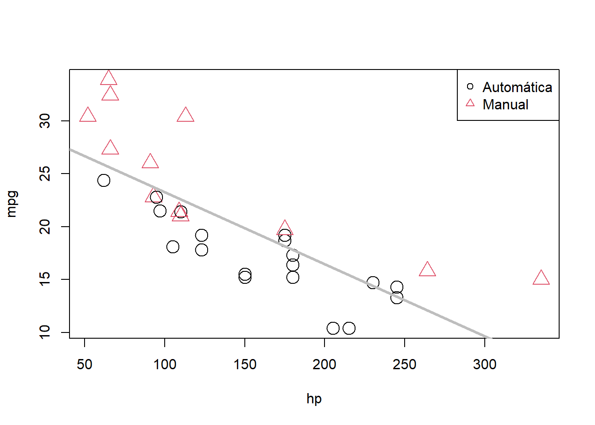
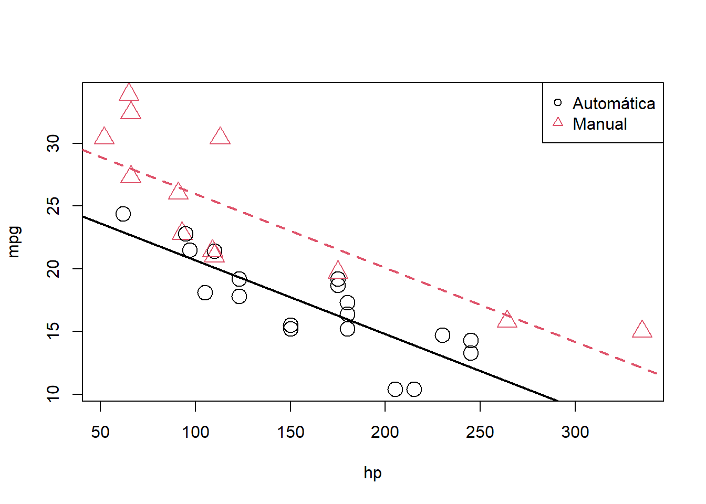
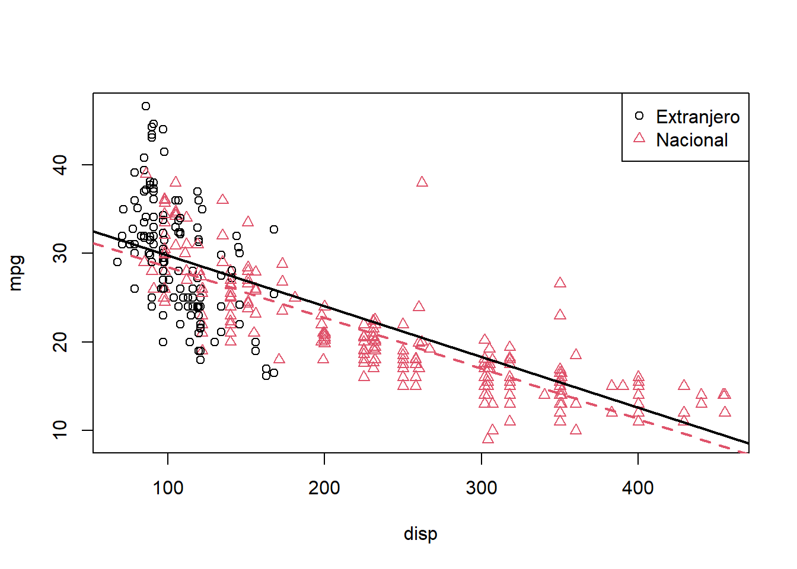
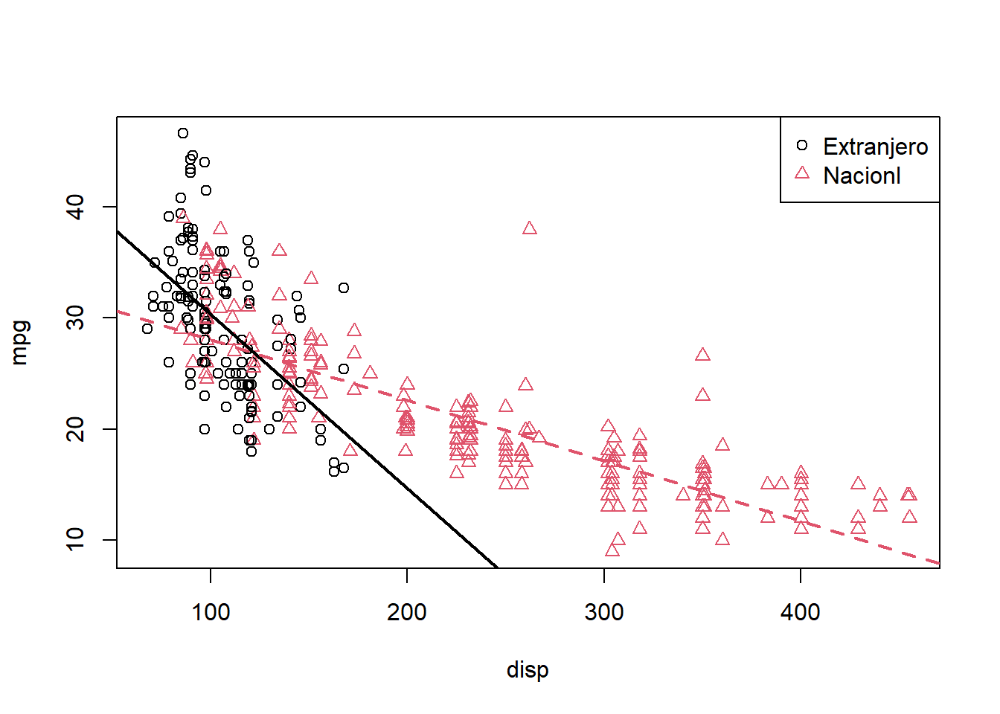
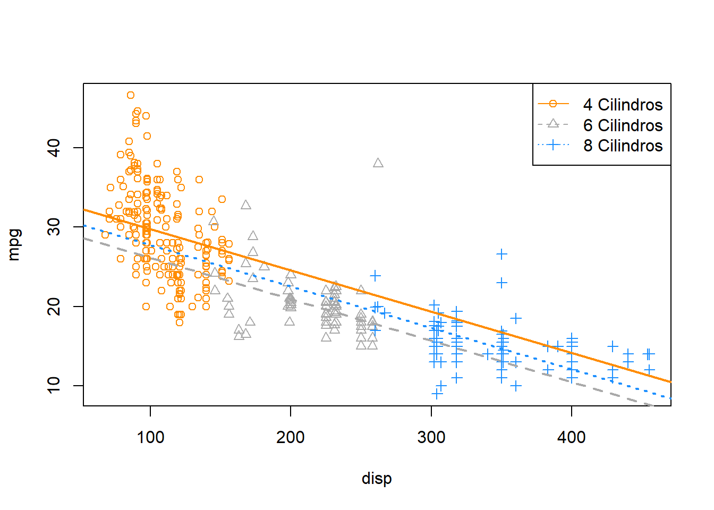
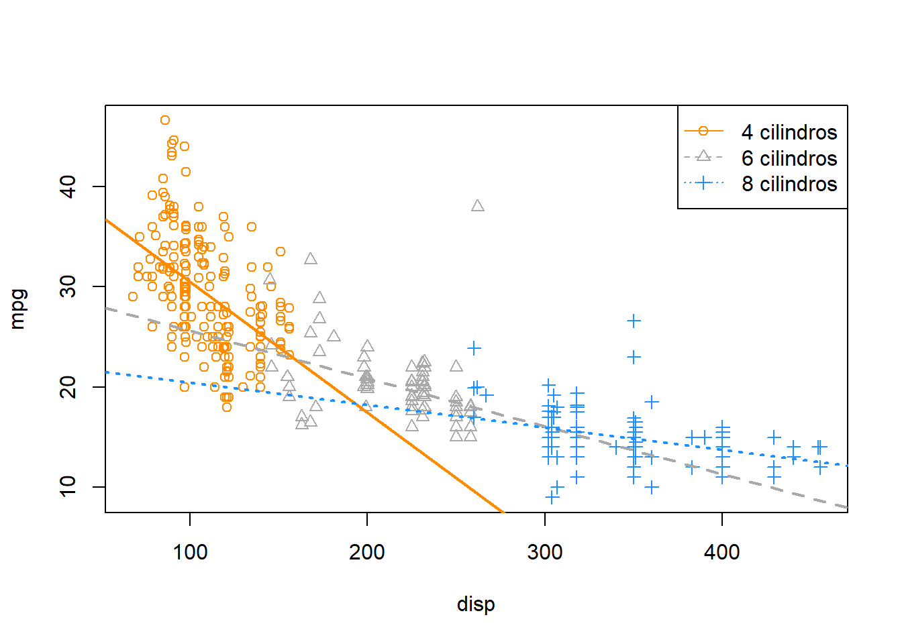

Capítulo 16 Interacciones y predictores categóricos
“El mayor valor de una imagen es cuando nos obliga a notar lo que nunca esperábamos ver.”
— John Tukey
Después de leer este capítulo, podrá:
- Incluir e interpretar variables categóricas en un modelo de regresión lineal mediante variables ficticias.
- Comprender las implicaciones de usar un modelo con una variable categórica de dos maneras: niveles que sirven como predictores únicos versus niveles que sirven como comparación con una línea de base.
- Construir e interpretar modelos de regresión lineal con términos de interacción.
- Identificar variables categóricas en un conjunto de datos y convertirlas en variables factor, si es necesario, utilizando
R.
Hasta ahora, en cada uno de nuestros análisis, solo hemos utilizado variables numéricas como predictores. También hemos utilizado solo modelos aditivos, lo que significa que el efecto que cualquier predictor tuvo en la respuesta no dependió de los otros predictores. En este capítulo, eliminaremos ambas restricciones. Ajustaremos modelos con predictores categóricos y usaremos modelos que permitan a los predictores interactuar. Las matemáticas de la regresión múltiple permanecerán en gran parte sin cambios, sin embargo, prestaremos mucha atención a la interpretación, así como a algunas diferencias en el uso de R.
16.1 Variables ficticias (Dummy)
Para este capítulo, usaremos brevemente el conjunto de datos integrado mtcars antes de regresar a nuestro conjunto de datos autompg que creamos en el último capítulo. El conjunto de datos mtcars es algo más pequeño, por lo que rápidamente veremos todo el conjunto de datos.
mtcars## mpg cyl disp hp drat wt qsec vs am gear carb
## Mazda RX4 21.0 6 160.0 110 3.90 2.620 16.46 0 1 4 4
## Mazda RX4 Wag 21.0 6 160.0 110 3.90 2.875 17.02 0 1 4 4
## Datsun 710 22.8 4 108.0 93 3.85 2.320 18.61 1 1 4 1
## Hornet 4 Drive 21.4 6 258.0 110 3.08 3.215 19.44 1 0 3 1
## Hornet Sportabout 18.7 8 360.0 175 3.15 3.440 17.02 0 0 3 2
## Valiant 18.1 6 225.0 105 2.76 3.460 20.22 1 0 3 1
## Duster 360 14.3 8 360.0 245 3.21 3.570 15.84 0 0 3 4
## Merc 240D 24.4 4 146.7 62 3.69 3.190 20.00 1 0 4 2
## Merc 230 22.8 4 140.8 95 3.92 3.150 22.90 1 0 4 2
## Merc 280 19.2 6 167.6 123 3.92 3.440 18.30 1 0 4 4
## Merc 280C 17.8 6 167.6 123 3.92 3.440 18.90 1 0 4 4
## Merc 450SE 16.4 8 275.8 180 3.07 4.070 17.40 0 0 3 3
## Merc 450SL 17.3 8 275.8 180 3.07 3.730 17.60 0 0 3 3
## Merc 450SLC 15.2 8 275.8 180 3.07 3.780 18.00 0 0 3 3
## Cadillac Fleetwood 10.4 8 472.0 205 2.93 5.250 17.98 0 0 3 4
## Lincoln Continental 10.4 8 460.0 215 3.00 5.424 17.82 0 0 3 4
## Chrysler Imperial 14.7 8 440.0 230 3.23 5.345 17.42 0 0 3 4
## Fiat 128 32.4 4 78.7 66 4.08 2.200 19.47 1 1 4 1
## Honda Civic 30.4 4 75.7 52 4.93 1.615 18.52 1 1 4 2
## Toyota Corolla 33.9 4 71.1 65 4.22 1.835 19.90 1 1 4 1
## Toyota Corona 21.5 4 120.1 97 3.70 2.465 20.01 1 0 3 1
## Dodge Challenger 15.5 8 318.0 150 2.76 3.520 16.87 0 0 3 2
## AMC Javelin 15.2 8 304.0 150 3.15 3.435 17.30 0 0 3 2
## Camaro Z28 13.3 8 350.0 245 3.73 3.840 15.41 0 0 3 4
## Pontiac Firebird 19.2 8 400.0 175 3.08 3.845 17.05 0 0 3 2
## Fiat X1-9 27.3 4 79.0 66 4.08 1.935 18.90 1 1 4 1
## Porsche 914-2 26.0 4 120.3 91 4.43 2.140 16.70 0 1 5 2
## Lotus Europa 30.4 4 95.1 113 3.77 1.513 16.90 1 1 5 2
## Ford Pantera L 15.8 8 351.0 264 4.22 3.170 14.50 0 1 5 4
## Ferrari Dino 19.7 6 145.0 175 3.62 2.770 15.50 0 1 5 6
## Maserati Bora 15.0 8 301.0 335 3.54 3.570 14.60 0 1 5 8
## Volvo 142E 21.4 4 121.0 109 4.11 2.780 18.60 1 1 4 2Nos interesarán tres de las variables: mpg, hp yam.
mpg: eficiencia de combustible, en millas por galón.hp: caballos de fuerza, en libras-pie por segundo.am: transmisión. Automática o manual.
Como hacemos a menudo, comenzaremos graficando los datos. Estamos interesados en mpg como variable respuesta y hp como predictor.
plot(mpg ~ hp, data = mtcars, cex = 2)
Dado que también estamos interesados en el tipo de transmisión, también podríamos etiquetar los puntos,
plot(mpg ~ hp, data = mtcars, col = am + 1, pch = am + 1, cex = 2)
legend("topright", c("Automática", "Manual"), col = c(1, 2), pch = c(1, 2))
Usamos un “truco” común de R al graficar estos datos. La variable am toma dos valores posibles; 0 para transmisión automática y 1 para transmisiones manuales. R puede usar números para representar colores, sin embargo, el color de 0 es blanco. Así que tomamos el vector am y le agregamos 1. Entonces, las observaciones con transmisiones automáticas ahora se representan con 1, que es negro en R, y la transmisión manual se representa con 2, que es rojo en R. (Tenga en cuenta que solo estamos agregando 1 dentro de la llamada a plot(), en realidad no estamos modificando los valores almacenados en am).
Ahora ajustamos el modelo SLR
\[ Y = \beta_0 + \beta_1 x_1 + \epsilon, \]
donde \(Y\) es mpg y \(x_1\) es hp. Para abreviar la notación, descartamos el índice \(i\) para las observaciones.
mpg_hp_slr = lm(mpg ~ hp, data = mtcars)Luego volvemos a graficar los datos y agregamos la línea ajustada
plot(mpg ~ hp, data = mtcars, col = am + 1, pch = am + 1, cex = 2)
abline(mpg_hp_slr, lwd = 3, col = "grey")
legend("topright", c("Automática", "Manual"), col = c(1, 2), pch = c(1, 2))
Deberíamos notar un patrón. Las observaciones manuales rojas están en gran parte por encima de la línea, mientras que las observaciones automáticas negras están en su mayoría por debajo de la línea. Esto significa que nuestro modelo subestima la eficiencia de combustible de las transmisiones manuales y sobreestima la eficiencia de combustible de las transmisiones automáticas. Para corregir esto, agregaremos un predictor a nuestro modelo, a saber, am como \(x_2\).
Nuestro nuevo modelo es
\[ Y = \beta_0 + \beta_1 x_1 + \beta_2 x_2 + \epsilon, \]
donde \(x_1\) y \(Y\) siguen siendo los mismos, pero ahora
\[ x_2 = \begin{cases} 1 & \text{transmisión manual} \\ 0 & \text{transmisión automática} \end{cases}. \]
En este caso, llamamos \(x_2\) una variable ficticia. Una variable ficticia tiene un nombre algo desafortunado, ya que de ninguna manera es “tonta”. De hecho, en realidad es algo inteligente. Una variable ficticia es una variable numérica que se utiliza en un análisis de regresión para “codificar” una variable categórica binaria. Veamos cómo funciona esto.
Primero, tenga en cuenta que am ya es una variable ficticia, ya que usa los valores 0 y 1 para representar transmisiones automáticas y manuales. A menudo, una variable como am almacenaría los valores de los caracteres auto y man y tendríamos que convertirlos en 0 y 1 o, como veremos más adelante,R prestará cuidado de crear variables ficticias por nosotros.
Entonces, para ajustar el modelo anterior, lo hacemos como cualquier otro modelo de regresión múltiple que hayamos visto antes.
mpg_hp_add = lm(mpg ~ hp + am, data = mtcars)Comprobando brevemente la salida, vemos que R ha estimado los tres parámetros \(\beta\).
mpg_hp_add##
## Call:
## lm(formula = mpg ~ hp + am, data = mtcars)
##
## Coefficients:
## (Intercept) hp am
## 26.58491 -0.05889 5.27709Dado que \(x_2\) solo puede tomar valores 0 y 1, podemos escribir efectivamente dos modelos diferentes, uno para transmisiones manuales y otro para transmisiones automáticas.
Para transmisiones automáticas, \(x_2 = 0\), tenemos,
\[ Y = \beta_0 + \beta_1 x_1 + \epsilon. \]
Luego, para las transmisiones manuales, \(x_2=1\), tenemos,
\[ Y = (\beta_0 + \beta_2) + \beta_1 x_1 + \epsilon. \]
Observe que estos modelos comparten la misma pendiente, \(\beta_1\), pero tienen intersecciones diferentes, que difieren en \(\beta_2\). Entonces, el cambio en mpg es el mismo para ambos modelos, pero en promedio,mpg difiere en \(\beta_2\) entre los dos tipos de transmisión.
Ahora calcularemos la pendiente estimada y el intercepto de estos dos modelos para que podamos agregarlos a una gráfica. Tenga en cuenta que:
- \(\hat{\beta}_0\) =
coef(mpg_hp_add)[1]= 26.5849137 - \(\hat{\beta}_1\) =
coef(mpg_hp_add)[2]= -0.0588878 - \(\hat{\beta}_2\) =
coef(mpg_hp_add)[3]= 5.2770853
Luego, podemos combinarlos para calcular la pendiente y las intersecciones estimadas.
int_auto = coef(mpg_hp_add)[1]
int_manu = coef(mpg_hp_add)[1] + coef(mpg_hp_add)[3]
slope_auto = coef(mpg_hp_add)[2]
slope_manu = coef(mpg_hp_add)[2]Al volver a graficar los datos, usamos estas pendientes e intersecciones para agregar los “dos” modelos ajustados a la gráfica.
plot(mpg ~ hp, data = mtcars, col = am + 1, pch = am + 1, cex = 2)
abline(int_auto, slope_auto, col = 1, lty = 1, lwd = 2) # agregar línea para auto
abline(int_manu, slope_manu, col = 2, lty = 2, lwd = 2) # agregar línea para manual
legend("topright", c("Automática", "Manual"), col = c(1, 2), pch = c(1, 2))
Notamos de inmediato que los puntos ya no son sistemáticamente incorrectos. Las observaciones manuales rojas varían alrededor de la línea roja sin un patrón en particular sin subestimar las observaciones como antes. Los puntos negros automáticos varían alrededor de la línea negra, también sin un patrón obvio.
Dicen que una imagen vale más que mil palabras, pero como estadístico, vale la pena realizar un análisis completo. La imagen de arriba hace claramente obvio que \(\beta_2\) es significativo, pero verifiquémoslo matemáticamente. Básicamente nos gustaría probar:
\[ H_0: \beta_2 = 0 \quad \text{vs} \quad H_1: \beta_2 \neq 0. \]
Esto no es nada nuevo. Nuevamente, las matemáticas son las mismas que las de los análisis de regresión múltiple que hemos visto antes. Podríamos realizar una prueba \(t\) o \(F\). La única diferencia es un ligero cambio de interpretación. Podríamos pensar en esto como probar un modelo con una sola línea (\(H_0\)) contra un modelo que permite dos líneas (\(H_1\)).
Para obtener el estadístico de prueba y el valor p para la prueba \(t\), usaríamos
summary(mpg_hp_add)$coefficients["am",]## Estimate Std. Error t value Pr(>|t|)
## 5.277085e+00 1.079541e+00 4.888270e+00 3.460318e-05Para hacer lo mismo con la prueba \(F\), usaríamos
anova(mpg_hp_slr, mpg_hp_add)## Analysis of Variance Table
##
## Model 1: mpg ~ hp
## Model 2: mpg ~ hp + am
## Res.Df RSS Df Sum of Sq F Pr(>F)
## 1 30 447.67
## 2 29 245.44 1 202.24 23.895 3.46e-05 ***
## ---
## Signif. codes: 0 '***' 0.001 '**' 0.01 '*' 0.05 '.' 0.1 ' ' 1Tenga en cuenta que estos de hecho están probando lo mismo, ya que los valores p son exactamente iguales. (Y el estadístico de prueba \(F\) es el estadístico de prueba \(t\) al cuadrado).
Recapitulando algunas interpretaciones:
- \(\hat{\beta}_0 = 26.5849137\) es el promedio estimado de
mpgpara un automóvil con transmisión automática y 0hp. - \(\hat{\beta}_0 + \hat{\beta}_2 = 31.8619991\) es el promedio estimado de
mpgpara un automóvil con transmisión manual y 0hp. - \(\hat{\beta}_2 = 5.2770853\) es la diferencia estimada en el promedio de
mpgpara automóviles con transmisión manual en comparación con aquellos con transmisión automática, para cualquierhp. - \(\hat{\beta}_1 = -0.0588878\) es el cambio estimado en el promedio de
mpgpara un aumento en unhp, para cualquiera de los tipos de transmisión.
Deberíamos prestar especial atención a esos dos últimos. En el modelo,
\[ Y = \beta_0 + \beta_1 x_1 + \beta_2 x_2 + \epsilon, \]
vemos que \(\beta_1\) es el cambio promedio en \(Y\) para un aumento en \(x_1\), sin importar el valor de \(x_2\). Además, \(\beta_2\) es siempre la diferencia en el promedio de \(Y\) para cualquier valor de \(x_1\). Estas son dos restricciones que no siempre querremos, por lo que necesitamos una forma de especificar un modelo más flexible.
Aquí nos limitamos a un solo predictor numérico \(x_1\) y una variable ficticia \(x_2\). Sin embargo, el concepto de variable ficticia se puede utilizar con modelos de regresión múltiple más grandes. Aquí solo usamos un único predictor numérico para facilitar la visualización, ya que podemos pensar en la interpretación de “dos líneas”. Pero, en general, podemos pensar en una variable ficticia como la creación de “dos modelos”, uno para cada categoría de una variable categórica binaria.
16.2 Interacciones
Para eliminar la restricción de la “misma pendiente”, ahora discutiremos la interacción. Para ilustrar este concepto, regresaremos al conjunto de datos autompg que creamos en el último capítulo, con algunas modificaciones más.
# leer el marco de datos de la web
autompg = read.table(
"http://archive.ics.uci.edu/ml/machine-learning-databases/auto-mpg/auto-mpg.data",
quote = "\"",
comment.char = "",
stringsAsFactors = FALSE)
# dar los encabezados del marco de datos
colnames(autompg) = c("mpg", "cyl", "disp", "hp", "wt", "acc", "year", "origin", "name")
# eliminar los datos que faltan, que se almacenan como "?"
autompg = subset(autompg, autompg$hp != "?")
# eliminar plymouth reliant, ya que causa algunos problemas
autompg = subset(autompg, autompg$name != "plymouth reliant")
# dar los nombres de las filas del conjunto de datos, según el motor, el año y el nombre
rownames(autompg) = paste(autompg$cyl, "cylinder", autompg$year, autompg$name)
# eliminar la variable de nombre
autompg = subset(autompg, select = c("mpg", "cyl", "disp", "hp", "wt", "acc", "year", "origin"))
# cambiar caballos de fuerza de carácter a numérico
autompg$hp = as.numeric(autompg$hp)
# Cree una variable ficticia para automóviles nacionales y extranjeros. nacionales = 1.
autompg$domestic = as.numeric(autompg$origin == 1)
# quitar los carros de 3 y 5 cilindros (que son muy raros).
autompg = autompg[autompg$cyl != 5,]
autompg = autompg[autompg$cyl != 3,]
# la siguiente línea verificaría que las posibilidades restantes del cilindro son 4, 6, 8
#unique(autompg$cyl)
# cambiar cyl a una variable de factor
autompg$cyl = as.factor(autompg$cyl)str(autompg)## 'data.frame': 383 obs. of 9 variables:
## $ mpg : num 18 15 18 16 17 15 14 14 14 15 ...
## $ cyl : Factor w/ 3 levels "4","6","8": 3 3 3 3 3 3 3 3 3 3 ...
## $ disp : num 307 350 318 304 302 429 454 440 455 390 ...
## $ hp : num 130 165 150 150 140 198 220 215 225 190 ...
## $ wt : num 3504 3693 3436 3433 3449 ...
## $ acc : num 12 11.5 11 12 10.5 10 9 8.5 10 8.5 ...
## $ year : int 70 70 70 70 70 70 70 70 70 70 ...
## $ origin : int 1 1 1 1 1 1 1 1 1 1 ...
## $ domestic: num 1 1 1 1 1 1 1 1 1 1 ...Hemos eliminado los automóviles con cilindros 3 y5, y hemos creado una nueva variable domestic que indica si un automóvil se fabricó o no en los Estados Unidos. Quitar los cilindros 3 y5 es simplemente para facilitar la demostración más adelante en el capítulo y no se haría en la práctica. La nueva variable domestic toma el valor1 si el automóvil se fabricó en los Estados Unidos, y 0 en caso contrario, al que nos referiremos como “extranjero”. (Estamos usando arbitrariamente los Estados Unidos como punto de referencia.) También hemos convertido cyl y origin en variables de factor, que discutiremos más adelante.
Ahora nos ocuparemos de tres variables: mpg, disp y domestic. Usaremos mpg como respuesta. Podemos ajustar un modelo,
\[ Y = \beta_0 + \beta_1 x_1 + \beta_2 x_2 + \epsilon, \]
donde
- \(Y\) es
mpg, la eficiencia del combustible en millas por galón, - \(x_1\) es
disp, el desplazamiento en pulgadas cúbicas, - \(x_2\) es
domesticcomo se describió anteriormente, es una variable ficticia.
\[ x_2 = \begin{cases} 1 & \text{Nacional} \\ 0 & \text{Extranjero} \end{cases} \]
Ajustaremos este modelo, extraeremos la pendiente y el intercepto de las “dos líneas”, graficaremos los datos y sumaremos las líneas.
mpg_disp_add = lm(mpg ~ disp + domestic, data = autompg)
int_for = coef(mpg_disp_add)[1]
int_dom = coef(mpg_disp_add)[1] + coef(mpg_disp_add)[3]
slope_for = coef(mpg_disp_add)[2]
slope_dom = coef(mpg_disp_add)[2]
plot(mpg ~ disp, data = autompg, col = domestic + 1, pch = domestic + 1)
abline(int_for, slope_for, col = 1, lty = 1, lwd = 2) # agregar línea para autos extranjeros
abline(int_dom, slope_dom, col = 2, lty = 2, lwd = 2) # agregar línea para autos nacionales
legend("topright", c("Extranjero", "Nacional"), pch = c(1, 2), col = c(1, 2))
Este es un modelo que muestra dos líneas paralelas, lo que significa que el mpg puede ser diferente en promedio entre los automóviles nacionales y extranjeros del mismo desplazamiento del motor, pero el cambio en elmpg promedio para un aumento en el desplazamiento es el mismo para ambos. Podemos ver que este modelo no está funcionando muy bien. La línea roja se ajusta bastante bien a los puntos rojos, pero a la línea negra no le va muy bien con los puntos negros, claramente debería tener una pendiente más negativa. Básicamente, nos gustaría un modelo que muestre dos pendientes diferentes.
Considere el siguiente modelo,
\[ Y = \beta_0 + \beta_1 x_1 + \beta_2 x_2 + \beta_3 x_1 x_2 + \epsilon, \]
donde \(x_1\), \(x_2\) y \(Y\) son los mismos que antes, pero hemos agregado un nuevo término de interacción \(x_1x_2\) que multiplica \(x_1\) y \(x_2\), por lo que también tenemos un parámetro adicional \(\beta\) \(\beta_3\).
Este modelo esencialmente crea dos pendientes y dos intersecciones, siendo \(\beta_2\) la diferencia en las intersecciones y \(\beta_3\) la diferencia en las pendientes. Para ver esto, dividiremos el modelo en dos “submodelos” para automóviles nacionales y extranjeros.
Para autos extranjeros, \(x_2=0\), tenemos
\[ Y = \beta_0 + \beta_1 x_1 + \epsilon. \]
Para autos nacionales, \(x_2=1\), tenemos
\[ Y = (\beta_0 + \beta_2) + (\beta_1 + \beta_3) x_1 + \epsilon. \]
Estos modelos tienen pendientes e intersecciones diferentes.
- \(\beta_0\) es el
mpgpromedio para un automóvil extranjero con 0disp. - \(\beta_1\) es el cambio en el
mpgpromedio para un aumento de undisp, para vehículos extranjeros. - \(\beta_0+\beta_2\) es el
mpgpromedio para un automóvil nacional con 0disp. - \(\beta_1+\beta_3\) es el cambio en el promedio de
mpgpara un aumento de undisp, para autos nacionales.
¿Cómo ajustamos este modelo en R? Hay diferentes maneras.
Un método sería simplemente crear una nueva variable y luego ajustar un modelo como cualquier otro.
autompg$x3 = autompg$disp * autompg$domestic # ¡ESTE CÓDIGO NO FUNCIONA!
do_not_do_this = lm(mpg ~ disp + domestic + x3, data = autompg) # ¡ESTE CÓDIGO NO FUNCIONA!Solo debe hacer esto como último recurso. Preferimos no tener que modificar nuestros datos simplemente para ajustarlos a un modelo. En su lugar, podemos decirle a R que nos gustaría usar los datos existentes con un término de interacción, que creará automáticamente cuando usemos el operador :.
mpg_disp_int = lm(mpg ~ disp + domestic + disp:domestic, data = autompg)Un método alternativo, que se ajustará exactamente al mismo modelo anterior, sería utilizar el operador *. Este método crea automáticamente el término de interacción, así como cualquier “término de orden inferior”, que en este caso son los términos de primer orden para disp y domestic
mpg_disp_int2 = lm(mpg ~ disp * domestic, data = autompg)Podemos verificar rápidamente que estos están haciendo lo mismo.
coef(mpg_disp_int)## (Intercept) disp domestic disp:domestic
## 46.0548423 -0.1569239 -12.5754714 0.1025184coef(mpg_disp_int2)## (Intercept) disp domestic disp:domestic
## 46.0548423 -0.1569239 -12.5754714 0.1025184Vemos que tanto las variables como las estimaciones de sus coeficientes son, de hecho, las mismas para ambos modelos.
summary(mpg_disp_int)##
## Call:
## lm(formula = mpg ~ disp + domestic + disp:domestic, data = autompg)
##
## Residuals:
## Min 1Q Median 3Q Max
## -10.8332 -2.8956 -0.8332 2.2828 18.7749
##
## Coefficients:
## Estimate Std. Error t value Pr(>|t|)
## (Intercept) 46.05484 1.80582 25.504 < 2e-16 ***
## disp -0.15692 0.01668 -9.407 < 2e-16 ***
## domestic -12.57547 1.95644 -6.428 3.90e-10 ***
## disp:domestic 0.10252 0.01692 6.060 3.29e-09 ***
## ---
## Signif. codes: 0 '***' 0.001 '**' 0.01 '*' 0.05 '.' 0.1 ' ' 1
##
## Residual standard error: 4.308 on 379 degrees of freedom
## Multiple R-squared: 0.7011, Adjusted R-squared: 0.6987
## F-statistic: 296.3 on 3 and 379 DF, p-value: < 2.2e-16Vemos que el uso de summary() da el resultado habitual para un modelo de regresión múltiple. Prestamos mucha atención a la fila de disp:domestic que prueba,
\[ H_0: \beta_3 = 0. \]
En este caso, la prueba de \(\beta_3=0\) está probando dos líneas con pendientes paralelas frente a dos líneas con pendientes posiblemente diferentes. La línea disp:domestic en la salida de summary() usa una prueba \(t\) para realizar la prueba.
También podríamos usar una prueba ANOVA \(F\). El modelo aditivo, sin interacción es nuestro modelo nulo, y el modelo de interacción es el alternativo.
anova(mpg_disp_add, mpg_disp_int)## Analysis of Variance Table
##
## Model 1: mpg ~ disp + domestic
## Model 2: mpg ~ disp + domestic + disp:domestic
## Res.Df RSS Df Sum of Sq F Pr(>F)
## 1 380 7714.0
## 2 379 7032.6 1 681.36 36.719 3.294e-09 ***
## ---
## Signif. codes: 0 '***' 0.001 '**' 0.01 '*' 0.05 '.' 0.1 ' ' 1Nuevamente vemos que esta prueba tiene el mismo valor p que la prueba \(t\). Además, el valor p es extremadamente bajo, por lo que entre los dos, elegimos el modelo de interacción.
int_for = coef(mpg_disp_int)[1]
int_dom = coef(mpg_disp_int)[1] + coef(mpg_disp_int)[3]
slope_for = coef(mpg_disp_int)[2]
slope_dom = coef(mpg_disp_int)[2] + coef(mpg_disp_int)[4]Aquí calculamos nuevamente la pendiente y las intersecciones de las dos líneas para su uso en la gráfica.
plot(mpg ~ disp, data = autompg, col = domestic + 1, pch = domestic + 1)
abline(int_for, slope_for, col = 1, lty = 1, lwd = 2) # line for foreign cars
abline(int_dom, slope_dom, col = 2, lty = 2, lwd = 2) # line for domestic cars
legend("topright", c("Extranjero", "Nacionl"), pch = c(1, 2), col = c(1, 2))
Vemos que estas líneas se ajustan mucho mejor a los datos, lo que coincide con el resultado de nuestras pruebas.
Hasta ahora solo hemos visto interacción entre una variable categórica (domestic) y una variable numérica (disp). Si bien esto es fácil de visualizar, dado que permite diferentes pendientes para dos líneas, no es el único tipo de interacción que podemos usar en un modelo. También podemos considerar interacciones entre dos variables numéricas.
Considere el modelo,
\[ Y = \beta_0 + \beta_1 x_1 + \beta_2 x_2 + \beta_3 x_1 x_2 + \epsilon, \]
donde
- \(Y\) es
mpg, la eficiencia de combustible en millas por galón, - \(x_1\) es
disp, el desplazamiento en pulgadas cúbicas, - \(x_2\) es
hp, los caballos de fuerza, en pies-libras por segundo.
¿Cómo cambia mpg basado en disp en este modelo? Podemos reorganizar algunos términos para ver cómo.
\[ Y = \beta_0 + (\beta_1 + \beta_3 x_2) x_1 + \beta_2 x_2 + \epsilon \]
Entonces, para un aumento de una unidad en \(x_1\) (disp), la media de \(Y\) (mpg) aumenta \(\beta_1 + \beta_3 x_2\), que es un valor diferente dependiendo del valor de \(x_2\) (hp)!
Dado que ahora estamos trabajando en tres dimensiones, este modelo no se puede justificar fácilmente mediante visualizaciones como el ejemplo anterior. En cambio, tendremos que confiar en una prueba.
mpg_disp_add_hp = lm(mpg ~ disp + hp, data = autompg)
mpg_disp_int_hp = lm(mpg ~ disp * hp, data = autompg)
summary(mpg_disp_int_hp)##
## Call:
## lm(formula = mpg ~ disp * hp, data = autompg)
##
## Residuals:
## Min 1Q Median 3Q Max
## -10.7849 -2.3104 -0.5699 2.1453 17.9211
##
## Coefficients:
## Estimate Std. Error t value Pr(>|t|)
## (Intercept) 5.241e+01 1.523e+00 34.42 <2e-16 ***
## disp -1.002e-01 6.638e-03 -15.09 <2e-16 ***
## hp -2.198e-01 1.987e-02 -11.06 <2e-16 ***
## disp:hp 5.658e-04 5.165e-05 10.96 <2e-16 ***
## ---
## Signif. codes: 0 '***' 0.001 '**' 0.01 '*' 0.05 '.' 0.1 ' ' 1
##
## Residual standard error: 3.896 on 379 degrees of freedom
## Multiple R-squared: 0.7554, Adjusted R-squared: 0.7535
## F-statistic: 390.2 on 3 and 379 DF, p-value: < 2.2e-16Usando summary() nos enfocamos en la fila de disp:hp que prueba,
\[ H_0: \beta_3 = 0. \]
Nuevamente, vemos un valor p muy bajo, por lo que rechazamos el nulo (modelo aditivo) a favor del modelo de interacción. Nuevamente, hay una prueba \(F\) equivalente.
anova(mpg_disp_add_hp, mpg_disp_int_hp)## Analysis of Variance Table
##
## Model 1: mpg ~ disp + hp
## Model 2: mpg ~ disp * hp
## Res.Df RSS Df Sum of Sq F Pr(>F)
## 1 380 7576.6
## 2 379 5754.2 1 1822.3 120.03 < 2.2e-16 ***
## ---
## Signif. codes: 0 '***' 0.001 '**' 0.01 '*' 0.05 '.' 0.1 ' ' 1Podemos echar un vistazo más de cerca a los coeficientes de nuestro modelo de interacción ajustado.
coef(mpg_disp_int_hp)## (Intercept) disp hp disp:hp
## 52.4081997848 -0.1001737655 -0.2198199720 0.0005658269- \(\hat{\beta}_0 = 52.4081998\) es el promedio estimado de
mpgpara un automóvil con 0dispy 0hp. - \(\hat{\beta}_1 = -0.1001738\) es el cambio estimado en el promedio de
mpgpara un aumento de 1disp, para un automóvil con 0hp. - \(\hat{\beta}_2 = -0.21982\) es el cambio estimado en el promedio de
mpgpara un aumento de 1hp, para un automóvil con 0disp. - \(\hat{\beta}_3 = 5.658269\times 10^{-4}\) es una estimación de la modificación del cambio en el promedio de
mpgpara un aumento endisp, para un automóvil de ciertohp(o viceversa).
Ese último coeficiente necesita más explicación. Recuerda el reordenamiento que hicimos antes.
\[ Y = \beta_0 + (\beta_1 + \beta_3 x_2) x_1 + \beta_2 x_2 + \epsilon. \]
Entonces, nuestra estimación de \(\beta_1+\beta_3x_2\), es $_1+_3x_2 $, que en este caso es
\[ -0.1001738 + 5.658269\times 10^{-4} x_2. \]
Esto dice que, para un aumento de un disp, vemos un cambio estimado en el mpg promedio de \(-0.1001738 + 5.658269\times 10^{-4} x_2\). Entonces, la relación entre disp y mpg depende de los hp del automóvil.
Entonces, para un automóvil con 50 hp, el cambio estimado en el promedio de mpg para un aumento de un disp es
\[ -0.1001738 + 5.658269\times 10^{-4} \cdot 50 = -0.0718824 \]
Y para un automóvil con 350 hp, el cambio estimado en el promedio dempg para un aumento de un disp es
\[ -0.1001738 + 5.658269\times 10^{-4} \cdot 350 = 0.0978657 \]
¡Observe que el signo cambió!
16.3 Variables factor
Hasta ahora en este capítulo, hemos limitado nuestro uso de variables categóricas a variables categóricas binarias. Específicamente, nos hemos limitado a variables ficticias que toman un valor de 0 o 1 y representan una variable categórica numéricamente.
Ahora discutiremos las variables factor, que es una forma especial en la que R trata las variables categóricas. Con las variables factor, un usuario puede simplemente pensar en las categorías de una variable, y R se encargará de las variables ficticias necesarias sin que el usuario realice ninguna asignación 0/1.
is.factor(autompg$domestic)## [1] FALSEAnteriormente, cuando usamos la variable domestic, no era una variable factor. Era simplemente una variable numérica que solo tomaba dos valores posibles, “1” para nacionales y “0” para extranjeros. Creemos una nueva variable origin que almacene la misma información, pero de una manera diferente.
autompg$origin[autompg$domestic == 1] = "domestic"
autompg$origin[autompg$domestic == 0] = "foreign"
head(autompg$origin)## [1] "domestic" "domestic" "domestic" "domestic" "domestic" "domestic"Ahora, la variable origin almacena"domestic"para automóviles nacionales y "foreign" para automóviles extranjeros.
is.factor(autompg$origin)## [1] FALSESin embargo, esto es simplemente un vector de valores de caracteres. Un vector de modelos de automóviles es una variable de carácter en R. Un vector de números de identificación de vehículos (VIN) también es una variable de carácter. Pero esos no representan una lista corta de niveles que podrían influir en una variable respuesta. Querremos coaccionar esta variable origin para que sea algo más: una variable factor.
autompg$origin = as.factor(autompg$origin)Ahora, cuando comprobamos la estructura del conjunto de datos autompg, vemos que el origin es una variable de factor.
str(autompg)## 'data.frame': 383 obs. of 9 variables:
## $ mpg : num 18 15 18 16 17 15 14 14 14 15 ...
## $ cyl : Factor w/ 3 levels "4","6","8": 3 3 3 3 3 3 3 3 3 3 ...
## $ disp : num 307 350 318 304 302 429 454 440 455 390 ...
## $ hp : num 130 165 150 150 140 198 220 215 225 190 ...
## $ wt : num 3504 3693 3436 3433 3449 ...
## $ acc : num 12 11.5 11 12 10.5 10 9 8.5 10 8.5 ...
## $ year : int 70 70 70 70 70 70 70 70 70 70 ...
## $ origin : Factor w/ 2 levels "domestic","foreign": 1 1 1 1 1 1 1 1 1 1 ...
## $ domestic: num 1 1 1 1 1 1 1 1 1 1 ...Las variables factor tienen niveles que son los posibles valores (categorías) que puede tomar la variable, en este caso extranjera o nacional.
levels(autompg$origin)## [1] "domestic" "foreign"Recordemos que previamente hemos ajustado el modelo
\[ Y = \beta_0 + \beta_1 x_1 + \beta_2 x_2 + \beta_3 x_1 x_2 + \epsilon, \]
donde
- \(Y\) es
mpg, la eficiencia de combustible en millas por galón, - \(x_1\) es
disp, el desplazamiento en pulgadas cúbicas, - \(x_2\) es
domesticuna variable ficticia donde1indica un automóvil nacional
(mod_dummy = lm(mpg ~ disp * domestic, data = autompg))##
## Call:
## lm(formula = mpg ~ disp * domestic, data = autompg)
##
## Coefficients:
## (Intercept) disp domestic disp:domestic
## 46.0548 -0.1569 -12.5755 0.1025Entonces aquí vemos
\[ \hat{\beta}_0 + \hat{\beta}_2 = 46.0548423 + -12.5754714 = 33.4793709 \]
es el mpg promedio estimado para un automóvil nacional con 0 disp.
Ahora intentemos hacer lo mismo, pero usando nuestra nueva variable factor.
(mod_factor = lm(mpg ~ disp * origin, data = autompg))##
## Call:
## lm(formula = mpg ~ disp * origin, data = autompg)
##
## Coefficients:
## (Intercept) disp originforeign disp:originforeign
## 33.47937 -0.05441 12.57547 -0.10252Parece que no produce los mismos resultados. Inmediatamente notamos que el intercepto es diferente, al igual que el coeficiente delante de disp. También notamos que los dos coeficientes restantes son de la misma magnitud que sus respectivas contrapartes usando la variable domestic, pero con un signo diferente. ¿Por qué está pasando esto?
Resulta que al usar una variable de factor, R está creando automáticamente una variable ficticia para nosotros. Sin embargo, no es la variable ficticia que usamos originalmente.
R esta ajustando el modelo
\[ Y = \beta_0 + \beta_1 x_1 + \beta_2 x_2 + \beta_3 x_1 x_2 + \epsilon, \]
donde
- \(Y\) es
mpg, la eficiencia de combustible en millas por galón, - \(x_1\) es
disp, el desplazamiento en pulgadas cúbicas, - \(x_2\) es una variable ficticia creada por
R. Utiliza1para representar un auto extranjero.
Y ahora,
\[ \hat{\beta}_0 = 33.4793709 \]
es el mpg promedio estimado para un automóvil doméstico con 0 disp, que de hecho es el mismo que antes.
Cuando R creó \(x_2\), la variable ficticia, utilizó automóviles nacionales como el nivel de referencia, que es el valor predeterminado de la variable factor. Entonces, cuando la variable ficticia es 0, el modelo representa este nivel de referencia, que es nacional. (R hace esta elección porque domestic viene antes que foreing en orden alfabético).
Entonces, los dos modelos tienen coeficientes estimados diferentes, pero debido a las diferentes representaciones, en realidad son el mismo modelo.
16.3.1 Factores con más de dos niveles
Consideremos ahora una variable factor con más de dos niveles. En este conjunto de datos, cyl es un ejemplo.
is.factor(autompg$cyl)## [1] TRUElevels(autompg$cyl)## [1] "4" "6" "8"Aquí la variable cyl tiene tres niveles posibles: 4, 6 y 8. Quizás se pregunte, ¿por qué no usar simplemente cyl como variable numérica? Ciertamente podría.
Sin embargo, eso obligaría a que la diferencia de mpg promedio entre los cilindros 4 y 6 sea la misma que la diferencia de mpg promedio entre los cilindros 6 y 8. Eso suele tener sentido para una variable continua, pero no para una variable discreta con tan pocos valores posibles. En el caso de esta variable, no existe un motor de 7 cilindros o un motor de 6.23 cilindros en los vehículos personales. Por estas razones, simplemente consideraremos que cyl es categórica. Esta es una decisión que normalmente deberá tomarse con variables ordinales. A menudo, con un gran número de categorías, la decisión de tratarlas como variables numéricas es apropiada porque, de lo contrario, se necesita una gran cantidad de variables ficticias para representarlas.
Definamos tres variables ficticias relacionadas con la variable del factor cyl.
\[ v_1 = \begin{cases} 1 & \text{4 cilindros} \\ 0 & \text{no 4 cilindros} \end{cases} \]
\[ v_2 = \begin{cases} 1 & \text{6 cilindros} \\ 0 & \text{no 6 cilindros} \end{cases} \]
\[ v_3 = \begin{cases} 1 & \text{8 cilindros} \\ 0 & \text{no 8 cilindros} \end{cases} \]
Ahora, ajustemos un modelo aditivo en R, usando mpg como respuesta y disp y cyl como predictores. Este debe ser un modelo que use “tres líneas de regresión” para modelar mpg, una para cada uno de los posibles niveles de cyl. Todos tendrán la misma pendiente (ya que es un modelo aditivo), pero cada uno tendrá su propio intercepto
(mpg_disp_add_cyl = lm(mpg ~ disp + cyl, data = autompg))##
## Call:
## lm(formula = mpg ~ disp + cyl, data = autompg)
##
## Coefficients:
## (Intercept) disp cyl6 cyl8
## 34.99929 -0.05217 -3.63325 -2.03603La pregunta es, ¿cuál es el modelo que R ha ajustado? Ha optado por utilizar el modelo
\[ Y = \beta_0 + \beta_1 x + \beta_2 v_2 + \beta_3 v_3 + \epsilon, \]
donde
- \(Y\) es
mpg, la eficiencia de combustible en millas por galón, - \(x\) es
disp, el desplazamiento en pulgadas cúbicas, - \(v_2\) y \(v_3\) son las variables ficticias definidas anteriormente.
¿Por qué R no usa \(v_1\)? Básicamente porque no es necesario. Para crear tres líneas, solo necesita dos variables ficticias ya que está usando un nivel de referencia, que en este caso es un automóvil de 4 cilindros. Los tres “submodelos” son entonces:
- 4 Cilindros: \(Y = \beta_0 + \beta_1 x + \epsilon\)
- 6 Cilindros: \(Y = (\beta_0 + \beta_2) + \beta_1 x + \epsilon\)
- 8 Cilindros: \(Y = (\beta_0 + \beta_3) + \beta_1 x + \epsilon\)
Observe que todos tienen la misma pendiente. Sin embargo, usando las dos variables ficticias, logramos los tres interceptos.
- \(\beta_0\) es el
mpgpromedio para un automóvil de 4 cilindros con 0disp. - \(\beta_0+\beta_2\) es el
mpgpromedio para un automóvil de 6 cilindros con 0disp. - \(\beta_0+\beta_3\) es el
mpgpromedio para un automóvil de 8 cilindros con 0disp.
Entonces, debido a que 4 cilindros es el nivel de referencia, \(\beta_0\) es específico de 4 cilindros, pero \(\beta_2\) y \(\beta_3\) se utilizan para representar cantidades relativas a 4 cilindros.
Como hemos hecho antes, podemos extraer estos interceptos y pendientes para las tres líneas y graficarlas.
int_4cyl = coef(mpg_disp_add_cyl)[1]
int_6cyl = coef(mpg_disp_add_cyl)[1] + coef(mpg_disp_add_cyl)[3]
int_8cyl = coef(mpg_disp_add_cyl)[1] + coef(mpg_disp_add_cyl)[4]
slope_all_cyl = coef(mpg_disp_add_cyl)[2]
plot_colors = c("Darkorange", "Darkgrey", "Dodgerblue")
plot(mpg ~ disp, data = autompg, col = plot_colors[cyl], pch = as.numeric(cyl))
abline(int_4cyl, slope_all_cyl, col = plot_colors[1], lty = 1, lwd = 2)
abline(int_6cyl, slope_all_cyl, col = plot_colors[2], lty = 2, lwd = 2)
abline(int_8cyl, slope_all_cyl, col = plot_colors[3], lty = 3, lwd = 2)
legend("topright", c("4 Cilindros", "6 Cilindros", "8 Cilindros"),
col = plot_colors, lty = c(1, 2, 3), pch = c(1, 2, 3))
En esta gráfica, tenemos
- 4 cilindros: puntos naranjas, línea naranja continua.
- 6 cilindros: puntos grises, línea gris discontinua.
- 8 cilindros: puntos azules, línea azul punteada.
Un resultado extraño es que estamos estimando que los autos de 8 cilindros tienen una mejor eficiencia de combustible que los autos de 6 cilindros en cualquier desplazamiento. La línea azul punteada siempre está por encima de la línea gris punteada. Eso no parece correcto. Tal vez para motores de cilindrada muy grande eso podría ser cierto, pero parece incorrecto para motores de cilindrada media a baja.
Para intentar arreglar esto, intentaremos usar un modelo de interacción, es decir, en lugar de simplemente tres interceptos y una pendiente, permitiremos tres pendientes. Nuevamente, dejaremos que R tome el volante, (sin juego de palabras) y luego averiguaremos qué modelo ha aplicado.
(mpg_disp_int_cyl = lm(mpg ~ disp * cyl, data = autompg))##
## Call:
## lm(formula = mpg ~ disp * cyl, data = autompg)
##
## Coefficients:
## (Intercept) disp cyl6 cyl8 disp:cyl6 disp:cyl8
## 43.59052 -0.13069 -13.20026 -20.85706 0.08299 0.10817# también podría usar mpg ~ disp + cyl + disp:cylR ha vuelto a optar por utilizar coches de 4 cilindros como nivel de referencia, pero ahora esto también tiene un efecto en los términos de interacción. R se ajusta al modelo.
\[ Y = \beta_0 + \beta_1 x + \beta_2 v_2 + \beta_3 v_3 + \gamma_2 x v_2 + \gamma_3 x v_3 + \epsilon \]
Estamos usando \(\gamma\) como un parámetro \(\beta\) para simplificar, de modo que, por ejemplo, \(\beta_2\) y \(\gamma_2\) están asociados con \(v_2\).
Ahora, los tres “submodelos” son:
- 4 cilindros: \(Y = \beta_0 + \beta_1 x + \epsilon\).
- 6 cilindros: \(Y = (\beta_0 + \beta_2) + (\beta_1 + \gamma_2) x + \epsilon\).
- 8 cilindros: \(Y = (\beta_0 + \beta_3) + (\beta_1 + \gamma_3) x + \epsilon\).
Interpretando algunos parámetros y coeficientes:
- \((\beta_0 + \beta_2)\) es el
mpgpromedio de un automóvil de 6 cilindros con 0disp - \((\hat{\beta}_1 + \hat{\gamma}_3) = -0.1306935 + 0.1081714 = -0.0225221\) es el cambio estimado en el promedio de
mpgpara un aumento de undisp, en un automóvil de 8 cilindros.
Entonces, como hemos visto antes, \(\beta_2\) y \(\beta_3\) cambian los interceptos para autos de 6 y 8 cilindros en relación con el nivel de referencia de \(\beta_0\) para autos de 4 cilindros.
Ahora, de manera similar \(\gamma_2\) y \(\gamma_3\) cambian las pendientes para autos de 6 y 8 cilindros en relación con el nivel de referencia de \(\beta_1\) para autos de 4 cilindros.
Una vez más, extraemos los coeficientes y graficamos los resultados.
int_4cyl = coef(mpg_disp_int_cyl)[1]
int_6cyl = coef(mpg_disp_int_cyl)[1] + coef(mpg_disp_int_cyl)[3]
int_8cyl = coef(mpg_disp_int_cyl)[1] + coef(mpg_disp_int_cyl)[4]
slope_4cyl = coef(mpg_disp_int_cyl)[2]
slope_6cyl = coef(mpg_disp_int_cyl)[2] + coef(mpg_disp_int_cyl)[5]
slope_8cyl = coef(mpg_disp_int_cyl)[2] + coef(mpg_disp_int_cyl)[6]
plot_colors = c("Darkorange", "Darkgrey", "Dodgerblue")
plot(mpg ~ disp, data = autompg, col = plot_colors[cyl], pch = as.numeric(cyl))
abline(int_4cyl, slope_4cyl, col = plot_colors[1], lty = 1, lwd = 2)
abline(int_6cyl, slope_6cyl, col = plot_colors[2], lty = 2, lwd = 2)
abline(int_8cyl, slope_8cyl, col = plot_colors[3], lty = 3, lwd = 2)
legend("topright", c("4 cilindros", "6 cilindros", "8 cilindros"),
col = plot_colors, lty = c(1, 2, 3), pch = c(1, 2, 3))
¡Esto se ve mucho mejor! Podemos ver que para los coches de cilindrada media, los coches de 6 cilindros ahora funcionan mejor que los de 8 cilindros, lo que parece mucho más razonable que antes.
Para justificar completamente el modelo de interacción (es decir, una pendiente única para cada nivel cyl) en comparación con el modelo aditivo (pendiente única), podemos realizar una prueba \(F\). Observe primero que no hay una prueba \(t\) que pueda hacer esto, ya que la diferencia entre los dos modelos no es un solo parámetro.
Nosotros probaremos,
\[ H_0: \gamma_2 = \gamma_3 = 0 \]
que representa las líneas de regresión paralelas que vimos antes,
\[ Y = \beta_0 + \beta_1 x + \beta_2 v_2 + \beta_3 v_3 + \epsilon. \]
Nuevamente, esta es una diferencia de dos parámetros, por lo que ninguna prueba \(t\) será útil.
anova(mpg_disp_add_cyl, mpg_disp_int_cyl)## Analysis of Variance Table
##
## Model 1: mpg ~ disp + cyl
## Model 2: mpg ~ disp * cyl
## Res.Df RSS Df Sum of Sq F Pr(>F)
## 1 379 7299.5
## 2 377 6551.7 2 747.79 21.515 1.419e-09 ***
## ---
## Signif. codes: 0 '***' 0.001 '**' 0.01 '*' 0.05 '.' 0.1 ' ' 1Como era de esperar, vemos un valor p muy bajo y, por lo tanto, rechazamos la Hipótesis nula. Preferimos el modelo de interacción sobre el modelo aditivo.
Recapitulando un poco:
- Modelo nulo: \(Y = \beta_0 + \beta_1 x + \beta_2 v_2 + \beta_3 v_3 + \epsilon\)
- Número de parámetros: \(q=4\)
- Modelo completo: \(Y = \beta_0 + \beta_1 x + \beta_2 v_2 + \beta_3 v_3 + \gamma_2 x v_2 + \gamma_3 x v_3 + \epsilon\)
- Número de parámetros: \(p=6\)
length(coef(mpg_disp_int_cyl)) - length(coef(mpg_disp_add_cyl))## [1] 2Vemos que hay una diferencia de dos parámetros, que también se muestra en la tabla ANOVA resultante de R. Observe que los siguientes dos valores también aparecen en la tabla ANOVA.
nrow(autompg) - length(coef(mpg_disp_int_cyl))## [1] 377nrow(autompg) - length(coef(mpg_disp_add_cyl))## [1] 37916.4 Parametrización
Hasta ahora, simplemente hemos dejado que R decida cómo crear las variables ficticias y, por lo tanto, R ha estado decidiendo la parametrización de los modelos. Para ilustrar la capacidad de usar parametrizaciones alternativas, recrearemos los datos, pero creando directamente las variables ficticias nosotros mismos.
new_param_data = data.frame(
y = autompg$mpg,
x = autompg$disp,
v1 = 1 * as.numeric(autompg$cyl == 4),
v2 = 1 * as.numeric(autompg$cyl == 6),
v3 = 1 * as.numeric(autompg$cyl == 8))
head(new_param_data, 20)## y x v1 v2 v3
## 1 18 307 0 0 1
## 2 15 350 0 0 1
## 3 18 318 0 0 1
## 4 16 304 0 0 1
## 5 17 302 0 0 1
## 6 15 429 0 0 1
## 7 14 454 0 0 1
## 8 14 440 0 0 1
## 9 14 455 0 0 1
## 10 15 390 0 0 1
## 11 15 383 0 0 1
## 12 14 340 0 0 1
## 13 15 400 0 0 1
## 14 14 455 0 0 1
## 15 24 113 1 0 0
## 16 22 198 0 1 0
## 17 18 199 0 1 0
## 18 21 200 0 1 0
## 19 27 97 1 0 0
## 20 26 97 1 0 0Ahora,
yesmpgxesdisp, el desplazamiento en pulgadas cúbicas,v1,v2yv3son variables ficticias como se definieron anteriormente.
Primero intentemos ajustar un modelo aditivo usando x así como las tres variables ficticias.
lm(y ~ x + v1 + v2 + v3, data = new_param_data)##
## Call:
## lm(formula = y ~ x + v1 + v2 + v3, data = new_param_data)
##
## Coefficients:
## (Intercept) x v1 v2 v3
## 32.96326 -0.05217 2.03603 -1.59722 NA¿Que está sucediendo aquí? Observe que R esencialmente ignora v3, pero ¿por qué? Bueno, debido a que R usa un intercepto, no puede usar también v3. Esto es porque
\[ \boldsymbol{1} = v_1 + v_2 + v_3 \]
lo que significa que \(\boldsymbol{1}\), \(v_1\), \(v_2\) y \(v_3\) son linealmente dependientes. Esto haría que la matriz \(X^\top X\) sea singular, pero necesitamos poder invertirla para resolver las ecuaciones normales y obtener \(\hat{\beta}.\) Con el intercepto, v1 y v2, R puede hacer los “tres interceptos” necesarips. Entonces, en este caso, v3 es el nivel de referencia.
Si eliminamos el intercepto, podemos obtener directamente los “tres interceptos” sin un nivel de referencia.
lm(y ~ 0 + x + v1 + v2 + v3, data = new_param_data)##
## Call:
## lm(formula = y ~ 0 + x + v1 + v2 + v3, data = new_param_data)
##
## Coefficients:
## x v1 v2 v3
## -0.05217 34.99929 31.36604 32.96326Aquí, estamos ajustando el modelo.
\[ Y = \mu_1 v_1 + \mu_2 v_2 + \mu_3 v_3 + \beta x +\epsilon. \]
Así tenemos:
- 4 Cilindros: \(Y = \mu_1 + \beta x + \epsilon\)
- 6 Cilindros: \(Y = \mu_2 + \beta x + \epsilon\)
- 8 Cilindros: \(Y = \mu_3 + \beta x + \epsilon\)
También podríamos hacer algo similar con el modelo de interacción y darle a cada línea un intercepto y una pendiente, sin la necesidad de un nivel de referencia.
lm(y ~ 0 + v1 + v2 + v3 + x:v1 + x:v2 + x:v3, data = new_param_data)##
## Call:
## lm(formula = y ~ 0 + v1 + v2 + v3 + x:v1 + x:v2 + x:v3, data = new_param_data)
##
## Coefficients:
## v1 v2 v3 v1:x v2:x v3:x
## 43.59052 30.39026 22.73346 -0.13069 -0.04770 -0.02252\[ Y = \mu_1 v_1 + \mu_2 v_2 + \mu_3 v_3 + \beta_1 x v_1 + \beta_2 x v_2 + \beta_3 x v_3 +\epsilon \]
- 4 Cilindros: \(Y = \mu_1 + \beta_1 x + \epsilon\)
- 6 Cilindros: \(Y = \mu_2 + \beta_2 x + \epsilon\)
- 8 Cilindros: \(Y = \mu_3 + \beta_3 x + \epsilon\)
Usando los datos originales, tenemos (al menos) tres formas equivalentes de especificar el modelo de interacción con R.
lm(mpg ~ disp * cyl, data = autompg)##
## Call:
## lm(formula = mpg ~ disp * cyl, data = autompg)
##
## Coefficients:
## (Intercept) disp cyl6 cyl8 disp:cyl6 disp:cyl8
## 43.59052 -0.13069 -13.20026 -20.85706 0.08299 0.10817lm(mpg ~ 0 + cyl + disp : cyl, data = autompg)##
## Call:
## lm(formula = mpg ~ 0 + cyl + disp:cyl, data = autompg)
##
## Coefficients:
## cyl4 cyl6 cyl8 cyl4:disp cyl6:disp cyl8:disp
## 43.59052 30.39026 22.73346 -0.13069 -0.04770 -0.02252lm(mpg ~ 0 + disp + cyl + disp : cyl, data = autompg)##
## Call:
## lm(formula = mpg ~ 0 + disp + cyl + disp:cyl, data = autompg)
##
## Coefficients:
## disp cyl4 cyl6 cyl8 disp:cyl6 disp:cyl8
## -0.13069 43.59052 30.39026 22.73346 0.08299 0.10817Todos se ajustan al mismo modelo, y lo que es más importante, cada uno utiliza seis parámetros, pero los coeficientes significan cosas ligeramente diferentes en cada uno. Sin embargo, una vez que se interpreten como pendientes e interceptos para las “tres líneas”, tendrán el mismo resultado.
Utilice ?All.equal para aprender sobre la función all.equal() y piense en cómo el siguiente código verifica que los residuos de los dos modelos son iguales.
all.equal(fitted(lm(mpg ~ disp * cyl, data = autompg)),
fitted(lm(mpg ~ 0 + cyl + disp : cyl, data = autompg)))## [1] TRUE16.5 Construcción de modelos más grandes
Ahora que hemos visto cómo incorporar predictores categóricos, así como términos de interacción, podemos comenzar a construir modelos mucho más grandes y flexibles que potencialmente pueden ajustarse mejor a los datos.
Definamos un modelo “grande”,
\[ Y = \beta_0 + \beta_1 x_1 + \beta_2 x_2 + \beta_3 x_3 + \beta_4 x_1 x_2 + \beta_5 x_1 x_3 + \beta_6 x_2 x_3 + \beta_7 x_1 x_2 x_3 + \epsilon. \]
Aquí,
- \(Y\) es
mpg. - \(x_1\) es
disp. - \(x_2\) es
hp. - \(x_3\) es
domestic, que es una variable ficticia que definimos, donde1es un vehículo nacional.
Lo primero a tener en cuenta, hemos incluido un nuevo término \(x_1x_2x_3\) que es una interacción de tres vías. Los términos de interacción pueden ser cada vez mayores, hasta el número de predictores del modelo.
Dado que usamos el término de interacción de tres vías, también usamos todas las interacciones de dos vías posibles, así como cada uno de los términos de primer orden (efecto principal). Este es el concepto de una jerarquía. Siempre que haya un término de “orden superior” en un modelo, también deben incluirse los términos relacionados de “orden inferior”. Matemáticamente, su inclusión o exclusión a veces es irrelevante, pero desde el punto de vista de la interpretación, es mejor seguir las reglas de la jerarquía.
Hagamos un reordenamiento para obtener un “coeficiente” delante de \(x_1\).
\[ Y = \beta_0 + \beta_2 x_2 + \beta_3 x_3 + \beta_6 x_2 x_3 + (\beta_1 + \beta_4 x_2 + \beta_5 x_3 + \beta_7 x_2 x_3)x_1 + \epsilon. \]
Específicamente, el “coeficiente” delante de \(x_1\) es
\[ (\beta_1 + \beta_4 x_2 + \beta_5 x_3 + \beta_7 x_2 x_3). \]
Analicemos este “coeficiente” para ayudarnos a comprender la idea de la flexibilidad de un modelo. Recordemos que,
- \(\beta_1\) es el coeficiente para un término de primer orden,
- \(\beta_4\) y \(\beta_5\) son coeficientes para interacciones bidireccionales,
- \(\beta_7\) es el coeficiente de la interacción de tres vías.
Si las interacciones de dos y tres vías no estuvieran en el modelo, todo el “coeficiente” sería simplemente
\[ \beta_1. \]
Por lo tanto, sin importar los valores de \(x_2\) y \(x_3\), \(\beta_1\) determinaría la relación entre \(x_1\) (disp) y \(Y\) (mpg).
Con la adición de las interacciones bidireccionales, ahora el “coeficiente” sería
\[ (\beta_1 + \beta_4 x_2 + \beta_5 x_3). \]
Ahora, cambiar \(x_1\) (disp) tiene un efecto diferente en \(Y\) (mpg), dependiendo de los valores de \(x_2\) y \(x_3\).
Por último, agregar la interacción de tres vías da el “coeficiente” completo
\[ (\beta_1 + \beta_4 x_2 + \beta_5 x_3 + \beta_7 x_2 x_3) \]
que es aún más flexible. Ahora cambiar \(x_1\) (disp) tiene un efecto diferente en \(Y\) (mpg), dependiendo de los valores de \(x_2\) y \(x_3\), pero de una manera más flexible que podemos ver con algunos reordenamientos más. Ahora, el “coeficiente” delante de \(x_3\) depende de \(x_2\).
\[ (\beta_1 + \beta_4 x_2 + (\beta_5 + \beta_7 x_2) x_3) \]
¡Es tan flexible que se está volviendo difícil de interpretar!
Ajustemos este modelo de interacción de tres vías en R.
big_model = lm(mpg ~ disp * hp * domestic, data = autompg)
summary(big_model)##
## Call:
## lm(formula = mpg ~ disp * hp * domestic, data = autompg)
##
## Residuals:
## Min 1Q Median 3Q Max
## -11.9410 -2.2147 -0.4008 1.9430 18.4094
##
## Coefficients:
## Estimate Std. Error t value Pr(>|t|)
## (Intercept) 6.065e+01 6.600e+00 9.189 < 2e-16 ***
## disp -1.416e-01 6.344e-02 -2.232 0.0262 *
## hp -3.545e-01 8.123e-02 -4.364 1.65e-05 ***
## domestic -1.257e+01 7.064e+00 -1.780 0.0759 .
## disp:hp 1.369e-03 6.727e-04 2.035 0.0426 *
## disp:domestic 4.933e-02 6.400e-02 0.771 0.4414
## hp:domestic 1.852e-01 8.709e-02 2.126 0.0342 *
## disp:hp:domestic -9.163e-04 6.768e-04 -1.354 0.1766
## ---
## Signif. codes: 0 '***' 0.001 '**' 0.01 '*' 0.05 '.' 0.1 ' ' 1
##
## Residual standard error: 3.88 on 375 degrees of freedom
## Multiple R-squared: 0.76, Adjusted R-squared: 0.7556
## F-statistic: 169.7 on 7 and 375 DF, p-value: < 2.2e-16¿Realmente necesitamos un modelo tan grande? Primero probemos la necesidad del término de interacción de tres vías. Es decir,
\[ H_0: \beta_7 = 0. \]
Entonces,
- Modelo completo: \(Y = \beta_0 + \beta_1 x_1 + \beta_2 x_2 + \beta_3 x_3 + \beta_4 x_1 x_2 + \beta_5 x_1 x_3 + \beta_6 x_2 x_3 + \beta_7 x_1 x_2 x_3 + \epsilon\)
- Modelo nulo: \(Y = \beta_0 + \beta_1 x_1 + \beta_2 x_2 + \beta_3 x_3 + \beta_4 x_1 x_2 + \beta_5 x_1 x_3 + \beta_6 x_2 x_3 + \epsilon\)
Ajustamos el modelo nulo en R como two_way_int_mod, luego usamos anova() para realizar una prueba \(F\) como de costumbre.
two_way_int_mod = lm(mpg ~ disp * hp + disp * domestic + hp * domestic, data = autompg)
#two_way_int_mod = lm(mpg ~ (disp + hp + domestic) ^ 2, data = autompg)
anova(two_way_int_mod, big_model)## Analysis of Variance Table
##
## Model 1: mpg ~ disp * hp + disp * domestic + hp * domestic
## Model 2: mpg ~ disp * hp * domestic
## Res.Df RSS Df Sum of Sq F Pr(>F)
## 1 376 5673.2
## 2 375 5645.6 1 27.599 1.8332 0.1766Vemos que el valor p es algo grande, por lo que no lo rechazaríamos. Preferimos el modelo nulo más pequeño, menos flexible, sin la interacción de tres vías.
Una nota rápida: el modelo completo todavía “ajusta mejor”. Tenga en cuenta que tiene un RMSE más pequeño que el modelo nulo, lo que significa que el modelo completo comete errores (cuadrados) más pequeños en promedio.
mean(resid(big_model) ^ 2)## [1] 14.74053mean(resid(two_way_int_mod) ^ 2)## [1] 14.81259Sin embargo, no es mucho más pequeño. Incluso podríamos decir que la diferencia es insignificante. Esta es una idea a la que volveremos más adelante con mayor detalle.
Ahora que hemos elegido el modelo sin la interacción de tres vías, ¿podemos ir más lejos? ¿Necesitamos las interacciones bidireccionales? Vamos a probar
\[ H_0: \beta_4 = \beta_5 = \beta_6 = 0. \]
Recuerde que ya elegimos \(\beta_7=0\), entonces,
- Modelo completo: \(Y = \beta_0 + \beta_1 x_1 + \beta_2 x_2 + \beta_3 x_3 + \beta_4 x_1 x_2 + \beta_5 x_1 x_3 + \beta_6 x_2 x_3 + \epsilon\)
- Modelo nulo: \(Y = \beta_0 + \beta_1 x_1 + \beta_2 x_2 + \beta_3 x_3 + \epsilon\)
Ajustamos el modelo nulo en R como additive_mod, luego usamos anova() para realizar una prueba \(F\) como de costumbre.
additive_mod = lm(mpg ~ disp + hp + domestic, data = autompg)
anova(additive_mod, two_way_int_mod)## Analysis of Variance Table
##
## Model 1: mpg ~ disp + hp + domestic
## Model 2: mpg ~ disp * hp + disp * domestic + hp * domestic
## Res.Df RSS Df Sum of Sq F Pr(>F)
## 1 379 7369.7
## 2 376 5673.2 3 1696.5 37.478 < 2.2e-16 ***
## ---
## Signif. codes: 0 '***' 0.001 '**' 0.01 '*' 0.05 '.' 0.1 ' ' 1Aquí el valor p es pequeño, por lo que rechazamos el nulo y preferimos el modelo completo (alternativo). De los modelos que hemos considerado, nuestra preferencia final es por
\[ Y = \beta_0 + \beta_1 x_1 + \beta_2 x_2 + \beta_3 x_3 + \beta_4 x_1 x_2 + \beta_5 x_1 x_3 + \beta_6 x_2 x_3 + \epsilon. \]